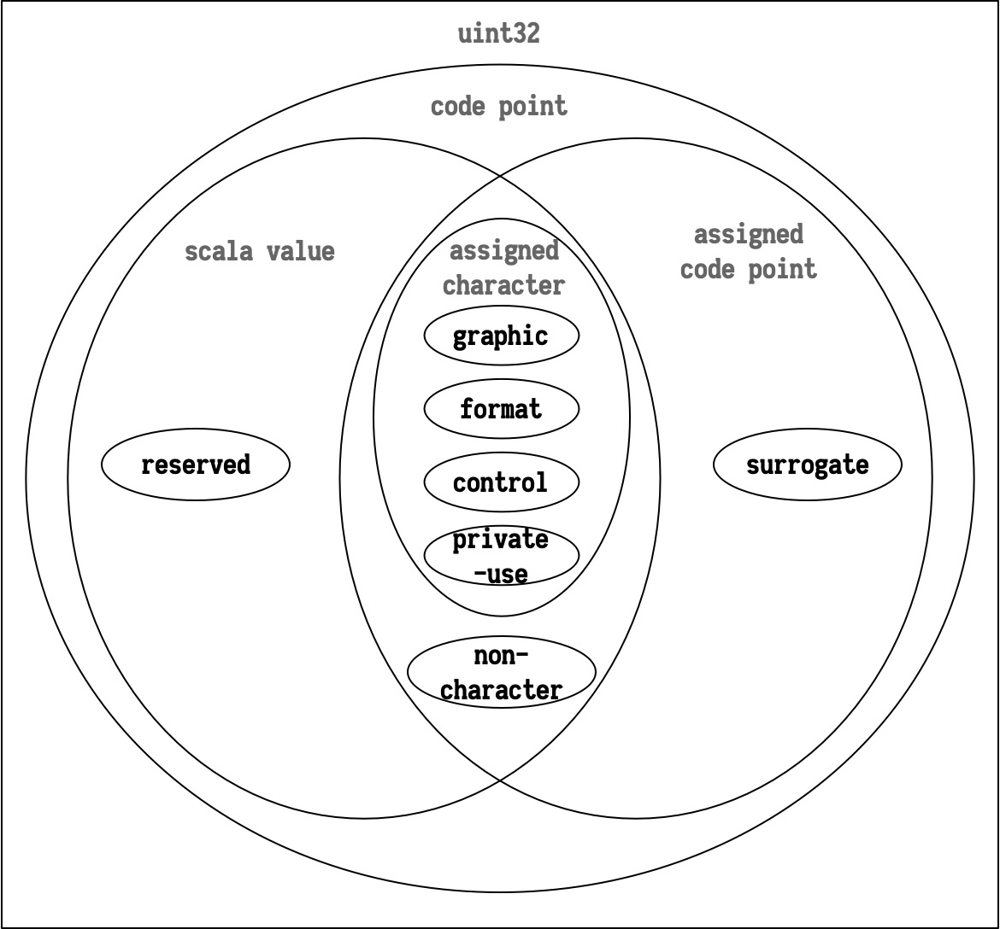

计算机只能处理二进制数字, 如果要处理文本, 就必须建立字符和二进制字节序列之间的关系, 而这种映射关系被称为字符集. 最简单的例子就是 ASCII 字符集, 它是 8-bit 序列 (0 ~ 256) 和字符之间的映射关系表, 例如 0110 0001 (97) 对应 'a', 0010 0100 (36) 对应 '$', 0010 1000 (40) 对应 '(' 等等.
ASCII 字符集很容易理解, 但问题是, 它能表示的字符数量太少了. 8-bit 序列最多只能对应 256 种情况, 而光是大小写字母就占了其中的 52 个, 再加上一些标点符号和控制字符, 已经没用多余的空间去表示其他语言的文字了.
要处理中文, 一个字节显然是不够的. 于是中国制定了 GB2312 标准 (中国国家标准简体中文字符集), 使用两个字节 (16-bit) 表示字符, 收录了 6763 个汉字, 还包括拉丁字母, 希腊字母, 日文平假名及片假名字母, 俄语西里尔字母在内的 682 个其他字符. 后来又出现了 GBK (K 是 “扩展” 的拼音) 和 GB18030 汉字字符集, 处理一些古汉语和罕用字.
然而, 不仅是中国, 很多国家, 比如日本 (Shift_JIS), 韩国 (Euc-kr), 都有自己的字符集. 这些字符集互相并不兼容, 而且产生了冲突, 如何同时使用多国文字变成了一个难题. 在这种情况下, Unicode 字符集诞生了.
Unicode 是一个字符集 (character set), 它规定了字符的二进制代码. 但 Unicode 规范 并不仅仅是一张扩充的 ASCII 表那么简单. 分配字符只是 Unicode 规范的一小部分, 该规范还包括大量的和文字处理相关的描述, 比如如何划分词语和断行, 处理不同地区的文字元素, 显示从右向左书写的文字等等.
文本元素 (text element) 是用于创建单词和句子的基本文字表示, 如英语字母, 日语平假名, 汉语中的方块字等等. 如何将文本 (text) 分割为文本元素取决于具体的语言和文字处理程序, 英语中的 “A” 和 “a” 在渲染时是不同的文字元素, 但对于搜索程序来说往往是相同的; 传统西班牙语排序程序中, “ll” 是一个文本元素, 位于 “l” 和 “m” 之间, 但在打字时则是两个分离的 “l”. 正因如此, 文本分段 (text segmentation) 非常的复杂, Unicode 规范避免对不同程序下的文本元素作出严格的定义, 取而代之定义的是更加底层的编码字, 一个文本元素可能由一或多个编码字组成.

编码字 (encoded character) 是 Unicode 规范的的核心概念, 一般来说字符 (character) 就是编码字的缩写, 它指的是抽象字和码点之间的映射关系. 其中, 抽象字 (abstract character) 是用于组织, 控制或表示文本数据的基本单位, 而码点 (code point) 则是用于表示数据的整数, 编码字在二者之间建立的映射关系表正是 “字符集” 一词最原始的含义, 也是贯穿 Unicode 规范的核心概念.
但是, 和 ASCII 表不同, 编码字 (encoded character) 并非是双射 (bijection) 关系, 一个抽象字可能对应多种编码方式, 以 'Å' 为例, 码点 U+00C5 和 U+212B 都表示该字符, 而且它还拥有一个使用组合字 (combining character) 表示的形式, 由 U+0041 和 U+030A 两个码点表示.
码点 (code point) 是编码字之下的抽象层, 对于 Unicode 规范来说, 码点就是 0 ~ 10FFFF16 区间上的整数, 这个区间提供了 1,114,112 个码点, 被称为编码空间 (codespace).
码点有七种基本类型 (categories), 而每个分类下还有子分类 :
以上四类码点被称为分配字 (assigned character), 用于表示抽象字. 而接下来的三类则被 Unicode 用于一些特殊用途.
在更旧的 Unicode 版本中, 码点的分类和现在有较大不同, 使用正则表达式引擎时应尤其注意.
Unicode 标量值 (Unicode scalar value) 是指非 Surrogate 的码点, 后文会更详细的讨论这些概念.
组合字 (combining character) 附着于与之关联的基本字符, 渲染时与之共同参与对字形的描述. 上文中提到的 'Å' ("\u{0041}\u{030A}") 就是一个典型的组合字, 由 'A' ("\u{0041}") 和 '◌̊' ("\u{030A}") 组合而成. 组合字可以用于任何基本字符, 比如 'B' ("\u{0042}") 同样可以和 '◌̊' 组成 'B̊'.
注意, '◌̊' 中的 '◌' ("\u{25cc}") 符号并不是 ' ̊' 的一部分, 只是用于表示组合字的一种惯用手法, 显示该位置应有一个基本字符.
一个基本字符可被不止一个组合字附着, 诸如 'ạ̭̈̃' ("\u{0061}\u{0308}\u{0303}\u{0323}\u{032D}") 这样的情况都是被允许的行为.
最后, 我们接触一个附加概念, 一个在编码字抽象层次之上的概念: 字素簇. 字素簇 (grapheme cluster) 指人直觉和认知上所认为是单个字符的文本元素. 一个字位簇可能就是一个抽象字, 也可能由多个抽象字组成. 字素簇应当是文本操作的基本单位, 高级文本元素在分割时, 通常不会从一个字素簇中间拆分. 比如一个排版程序在自动换行时将 'Å' 的 'A' 和 '◌̊' 拆到了两行中, 这显然是不可容忍的行为. 再比如反转字符串 'ÅB' ("\u0041\u030A\u0042") 的时候, "\u0041\u030A" ('Å') 应整体和 'B' 交换位置, 得到 'BÅ' ("\u0042\u0041\u030A"), 而不该是简单的反转码位的排列, 得到 'B̊A' ("\u0041\u030A\u0042").
组合字是字素簇的重要组成成分, 但字素簇并非只用于确保组合字的完整性, 其划分和具体的语言的种类, 算法的选择都一定关系, 斯洛伐克 (Slovak) 语中的 "ch" 或赛萨拉 (Sisaala) 语中的 "ky" 都被视为一个独立的字素簇, 尽管它们确实由两个分离的字母组成.
Swift 的 String 类型默认以字位簇作为文本处理的基本单位.
let str = "\u{0041}\u{030A}\u{0042}"
str // "ÅB"
String(str.reversed()) // "BÅ"
Array(str) // ["Å", "B"]
Java 如果直接使用 StringBuilder 的 reverse() 方法翻转字符串, 得到的结果是错的.
var str = "\u0041\u030A\u0042";
str; // "ÅB"
new StringBuilder(str).reverse(); // "B̊A"
使用正则表达式可以缓解这个问题, 在正则表达式语法中, \X 用于表达字素簇, 而 \b{g} 用于表达字素簇的边界, 使用 .split("\\b{g}") 方法就能够正确的按照字素簇将字符串分割为字素簇数组了.
var str = "\u0041\u030A\u0042";
var cluster = str.split("\\b{g}") // String[2] { "Å", "B" }